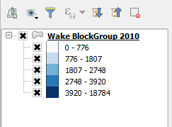

Although the color tones increasing is not linear, it's easier to see the differences between neighbor Block Groups.

I'm still not happy with one thing: the intervals labels. They have too many digits, and show strange numbers. In the next steps, we will change settings to represent the number inhabitants in thousands with one decimal digit.